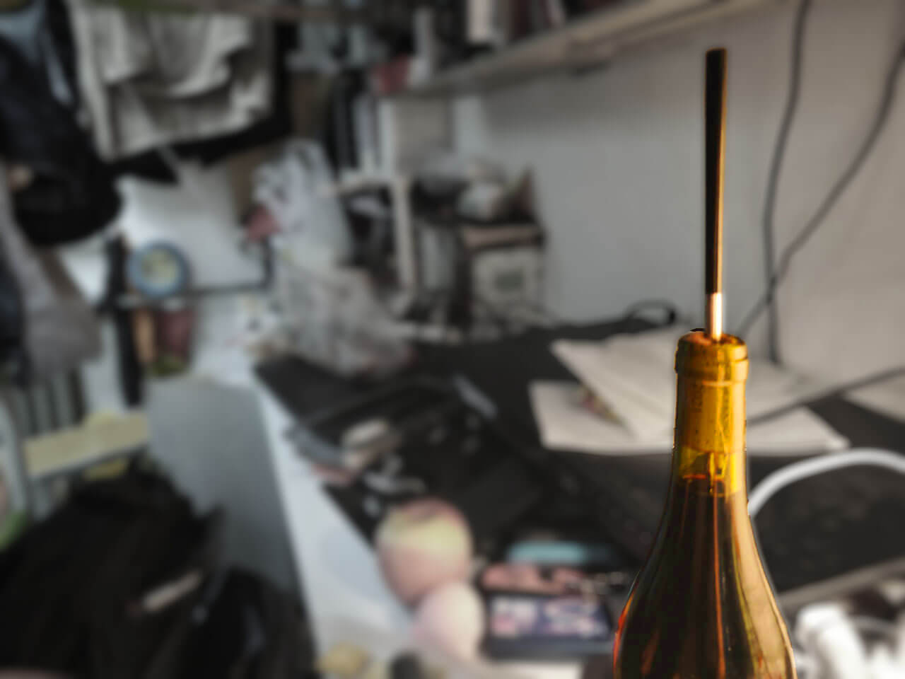
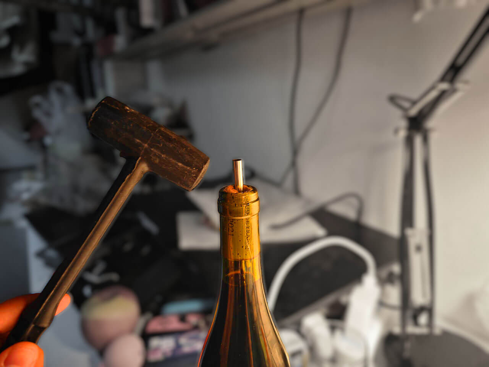
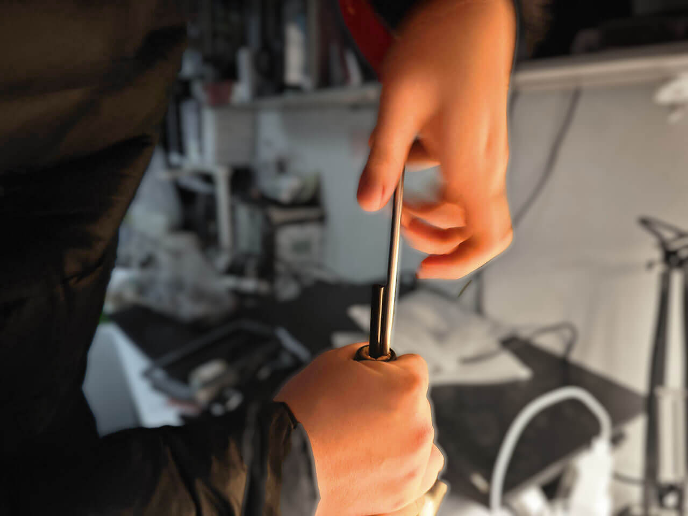
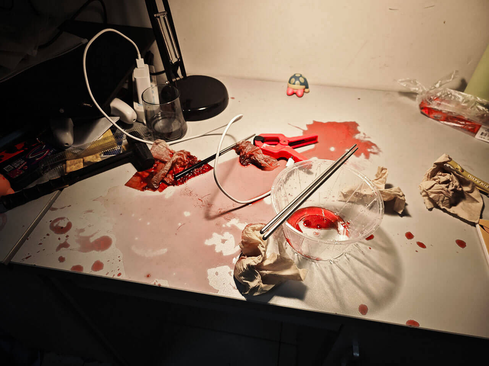
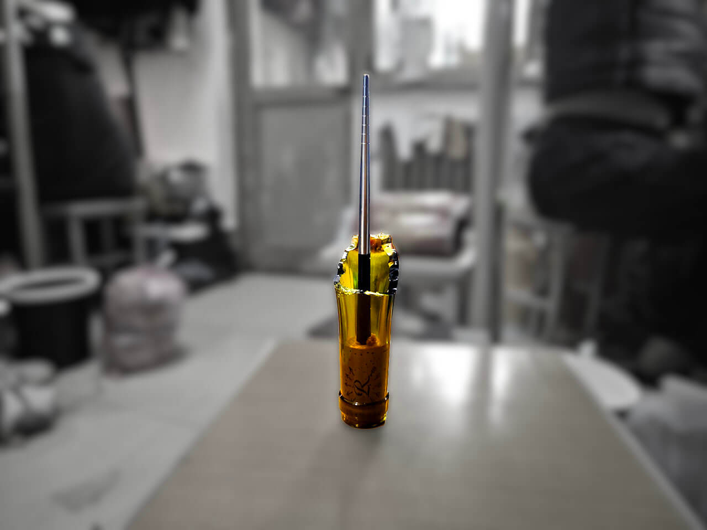

Diary-9-倒二
12.31
舞台剧——笨蛋 promefire 买酒不买开瓶器
这是一个美好的元旦前夕，年轻的凡哥和杰哥买来一瓶红酒和一份烧鸡，决定开始享受这个夜晚。哦，我的上帝呀！看看这瓶美丽的红酒！它散发着诱人的深红色泽，仿佛一匹醉人的夕阳染红了整个酒杯。再看看这份迷人的烧鸡，它饱满的金黄色皮肤反射着温暖的灯光，令人联想起柔软的麦田与夏日的太阳。

在这个令人扼腕的时刻，年轻的凡哥和杰哥突然意识到自己忘记了买开瓶器。面对这一窘境，他们的眉头紧锁，眼神闪烁着无奈和焦急。然而，他们不愿放弃享受美酒的机会，心生一计。凡哥毅然拿出手中的筷子，坚定地插入软木塞的边缘，决心用自己的“智慧”打开这瓶扣人心弦的红酒。

软木塞和玻璃瓶身之间似乎形成了一道无法逾越的鸿沟，阻挡着红酒的主人品尝美酒的机会。凡哥拿出一把锤子，试图将筷子砸穿软木塞。但是，这个方法也没有奏效。
筷子被软木塞卡住，就连拔出它都变得困难。凡哥决定采取更加强力的方式，用尽全力将筷子拔出，可是依然不成功。

凡哥选择插入了第二根筷子！然而不幸的是，第二根筷子也插在了软木塞上拔不出来！这简直糟糕透了，比隔壁本杰明老爷爷的旧轮胎还要糟糕。他们意识到这个问题比他想象的更加棘手。
年轻的凡哥和杰哥感到非常失望和沮丧，但仍然不想放弃。于是，凡哥决定采用一种更激进的方法来打开酒瓶。凡哥用力将瓶口向墙壁撞击。经过多次努力，瓶口终于被打碎了。虽然这并不是最理想的方法，但他们最终还是成功地品尝到了这瓶美酒，而且在这个过程中也锻炼了自己的毅力和创造力。

这真是个令人尴尬的情节。看来凡哥和杰哥的幸运并不持久。他们正在享受美酒时，关某不慎将红酒洒在桌子上，整个桌面都被染上了红色。这突如其来的意外无疑给愉快的氛围蒙上了一层阴影。或许他们会笑着解决这个问题，毕竟美好的时光不应该因为一点小事而被打扰。
收拾完桌面上的红酒，他们决定不再让这个小意外影响他们的心情。他们取出干净的酒杯，重新倒满红酒。尽管桌子上曾经一片混乱，但现在他们围坐在一起，准备享用这份美酒。
他们举起酒杯，相互祝福，并感激这样难得的时刻。他们轻轻品味着红酒的香气，让酒液在舌尖舒展开来。随着酒液在口中流淌，他们感受到了红酒的浓郁和复杂的口感。喝下每一口，他们的味蕾都得到了满足，心情也逐渐变得愉悦起来。

破碎的瓶口上仍插着软木塞，那根筷子依然笔直地立在那里。真傻逼啊！